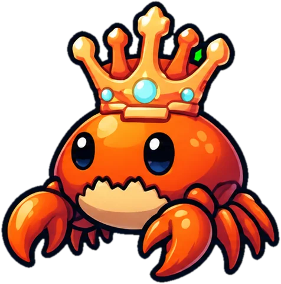

 WaterFight
WaterFightTap a stage to read its story.
Emblet is a small bright-orange crab wearing what appears to be a tiny golden crown balanced on its shell. Its two round black eyes peer out from beneath the crown with intense seriousness, and it scuttles sideways across the granite ledges with surprising confidence for something so small. Water gathers in the hollow of its shell after rain, and it carries this small reservoir everywhere, sipping from it during the dry granite summers. Guardians say a crab that wears its crown without boasting is worth following into any battle.
Field note: Emblet polishes its crown-shell with its smaller claws for exactly three minutes every morning before doing anything else.
Granite Heights. Emblet and its family are found in the Granite Heights. See everyone who lives there.
Share a Bond Food that matches its types to become friends. Emblet loves:
A Bond Food is not a trick. It joins your spirit with the Kimuro's spirit, and only when it chooses you.
Print the Kimuro adventure packs: mazes, cards, a board game and Bond Mark medals.
See the printable packs